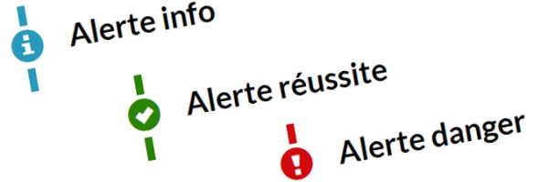

Effets de modification du texte – Système de conception GCWeb

Utilisez ce type de conception pour indiquer que des modifications ont été apportées à une page.
Sur cette page
Options de conception
Apparence
Texte normal
Texte normal et texte surligné
Texte normal et texte supprimé
Texte normal et texte barré text de remplacement
Texte normal et texte inséré
Texte normal et [contenu caviardé]
Code HTML
<p>Texte normal</p><p>Texte normal et <mark>texte surligné</mark></p><p>Texte normal et <del>texte supprimé</del></p><p>Texte normal et <span class="wb-inv">description du text original</span><s>texte barré</s><span class="wb-inv">description du text remplacement</span>texte de remplacement</p><p>Texte normal et <ins>texte inséré</ins></p><p>Texte normal et <span class="bg-dark text-white redacted">[contenu caviardé]</span></p>Utilisation correcte
- Utilisez le texte surligné pour mettre en évidence une section du texte à des fins de référence en raison de sa pertinence dans un autre contexte.
- Mettez le texte en surbrillance pour montrer les termes de recherche correspondants ou pour montrer le texte lié à autre chose.
- Utilisez le texte supprimé pour afficher le texte récemment supprimé, mais utilisez-le avec parcimonie, car il rend la page difficile à lire.
- Utilisez le texte supprimé pour montrer les modifications apportées à un document officiel, comme un procès-verbal de réunion ou une loi.
- Utilisez-le comme un effet temporaire sur une page.
- Utilisez le texte de remplacement pour indiquer qu’un texte n'est plus exact ou qu’il n'est plus pertinent, mais utilisez-le avec parcimonie, car il rend la page difficile à lire.
- Utilisez le texte supprimé pour montrer les modifications apportées à un document officiel, comme un procès-verbal de réunion ou une loi.
- Utilisez-le temporairement sur une page.
- Utilisez-le pour les corrections ou les mises à jour apportées au texte, comme dans le cas des changements de prix où l’ancien et le nouveau prix sont affichés
- Utilisez le contenu caviardé pour indiquer les parties de la page qui sont protégées ou qui ne peuvent pas être consultées :
- Inséré (inline) : lorsque quelques mots d’un paragraphe sont caviardés
- Pleine largeur (full width) : lorsqu’une ligne, un paragraphe, une liste ou un tableau est caviardé au complet (ajoutez la classe
full-width)
Utilisation incorrecte
- N’utilisez pas le texte surligné à la place du texte en gras.
- Cette balise n'est pas destinée à mettre en évidence des mots-clés, des phrases, des chiffres ou des montants totaux.
- N'utilisez pas de texte inséré
- Il imite l'aspect visuel d'un lien, ce qui pose des problèmes de convivialité.
- Les non-liens ne doivent pas ressembler à des liens.
- N’utilisez pas le texte surligné à la place du contenu caviardé
Composantes complémentaires
Des fonctionnalités et des comportements supplémentaires sont disponibles.
-


- Date de modification :